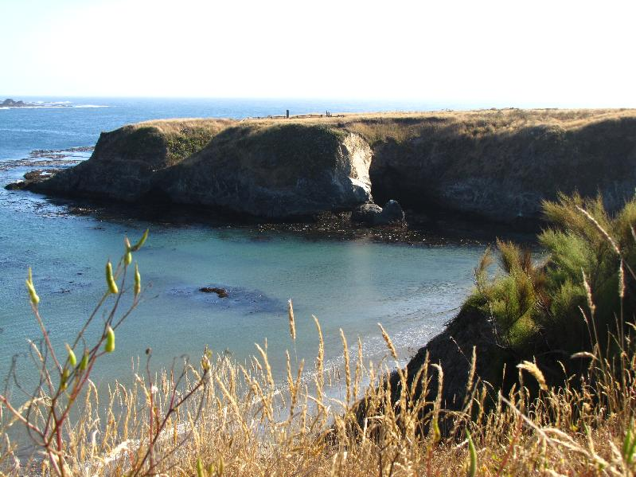
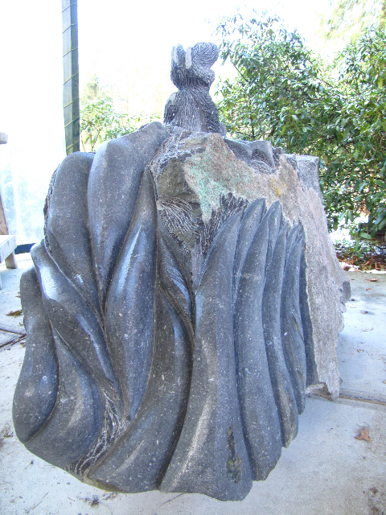
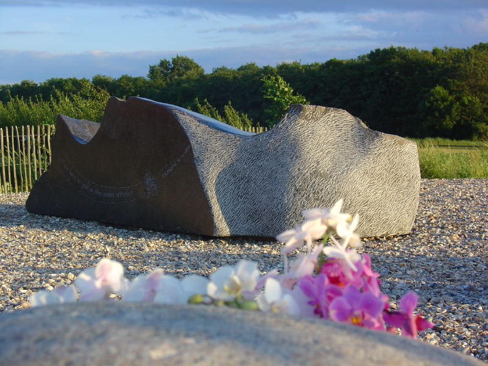

News
| 27 and 28 May 2012 |
"Pinkster-expositie"
Huize Ekeby, Voorst
|
 |
| September-October 2011 | Residency in Mendocino California www.mendocinoartcenter.org |
 |
| 9 -15 july 2011 | Exhibition Bronkhorst, the Netherlands |
 |
| 2010 | Work in progress: Inspirare - Expirare |
 |
| 25 june- 5 july 2009 | Sculptor meeting Villa Biener, Cipressa, Italy www.villabiener.com |
 |
| 31 may - 1 june
2009 |
"Pinkster-expositie" Huize Ekeby, Voorst |
 |
| 30 Nov. - 21 Dec. 2008 | Exhibition:
Klarenbeek, the Netherlands Galerie de Landweg |
|
| 13 Sept. - 28 Sept 2008 | Exhibition Voorst, the Netherlands |

|
| 11 Febr. - 10 March 2008 | Exhibition EcoFuturiste, Monaco www.artyecology.org |
 les jardins des Boulingrins 1930 |
| 7-7-2007 | Revelation of Tsunami monument (The wave) |
 |